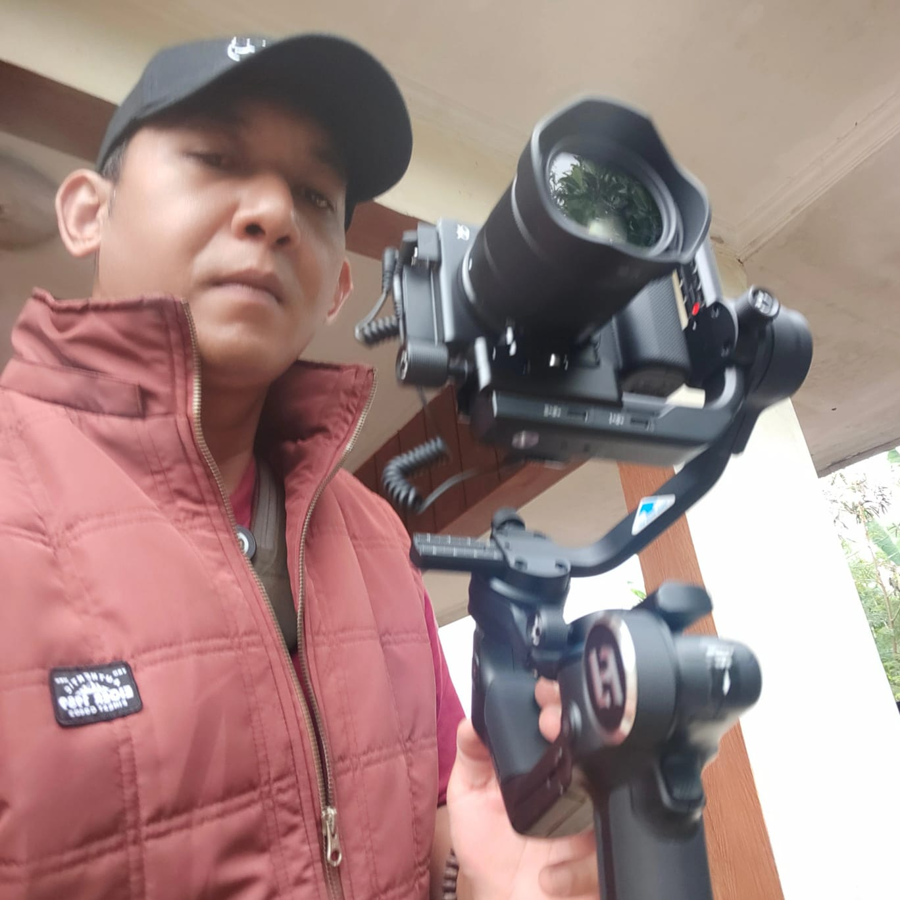
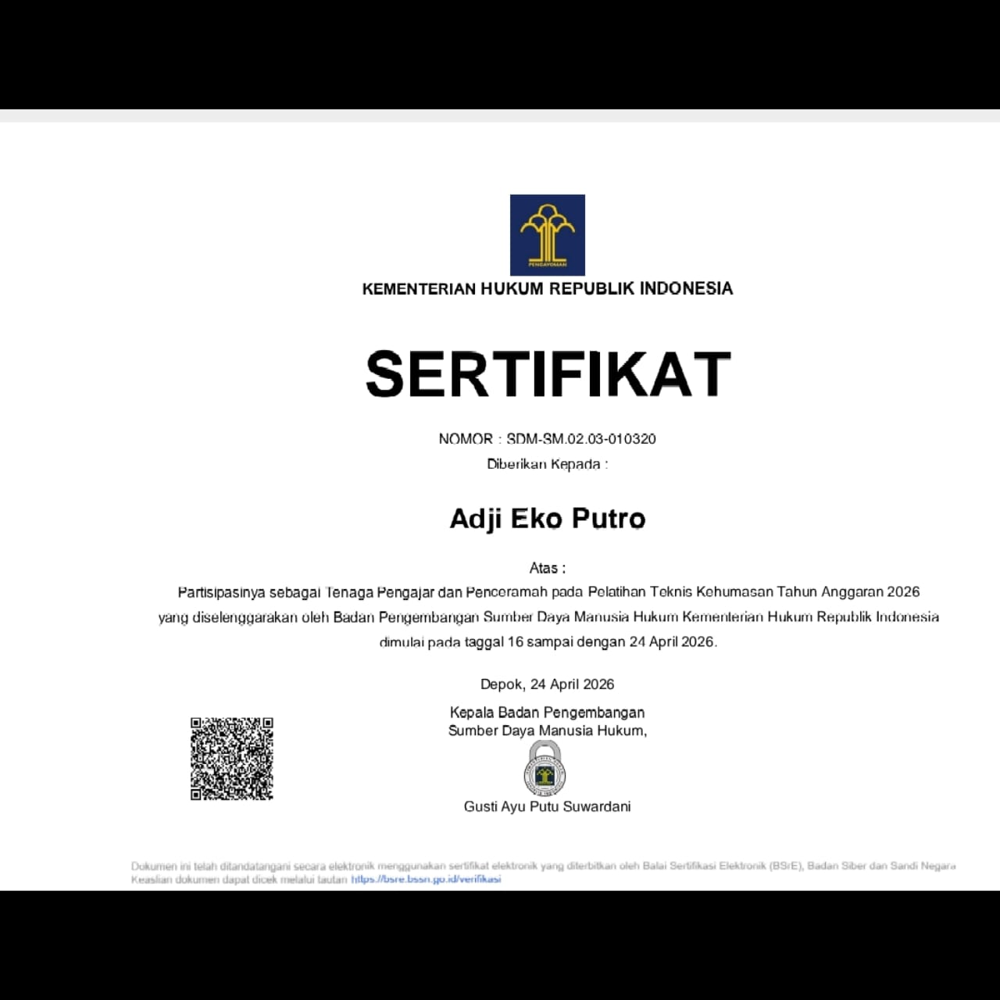
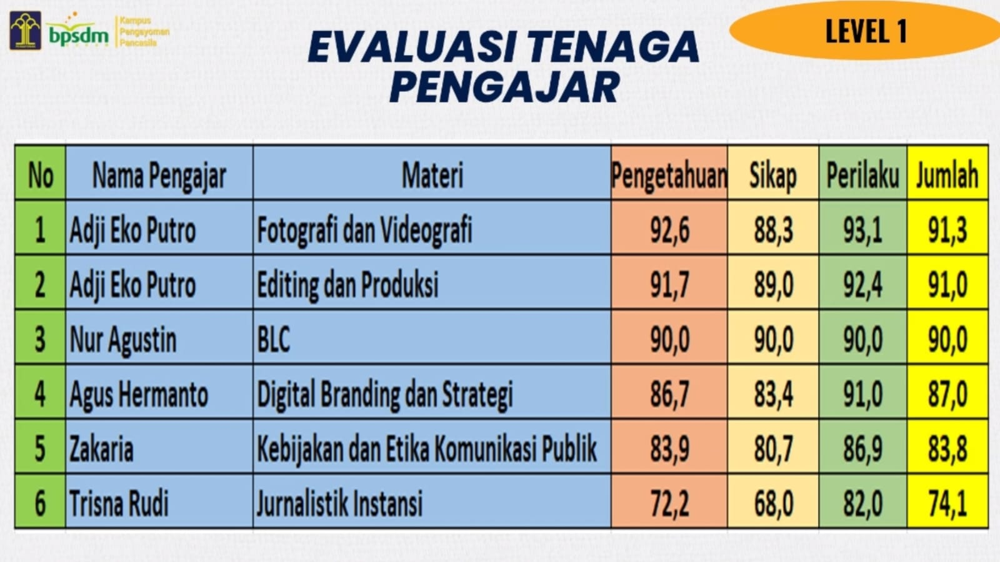

Informasi singkat tentang profesionalitas dan pengalaman

Content Creator | Editor | Writer
Adji Eko Putro merupakan praktisi broadcasting dan content creator yang telah berpengalaman di dunia media televisi sejak tahun 2006. Karier profesionalnya dimulai di TVRI pusat di senayan selama 1 tahun, dilanjutkan di TPI (Televisi Pendidikan Indonesia) selama 4 tahun, dan berkembang selama 12 tahun di tvOne (Lativi Media Karya) dalam bidang produksi televisi dan penyiaran. Selain aktif di industri media, Adji Eko Putro juga menjadi pengajar dan Dosen Praktisi di Politeknik Negeri Media Kreatif (Polimedia Kreatif) Program Studi Penyiaran dengan mata kuliah Sistem Produksi Televisi dan Multiplatform Media Sosial hingga saat ini. Pengalaman mengajar juga diperluas melalui program Multimedia Broadcasting Content di Sekolah Alam Ibnu Hajar Bogor sejak tahun 2023 sampai sekarang. Pada tahun 2025, Adji Eko Putro mendirikan GEN (Generation Exploration Network), sebuah wadah kreatif dan edukatif yang berfokus pada pengembangan broadcasting, media digital, dan kreativitas generasi muda. GEN menjadi ruang eksplorasi bagi para kreator untuk belajar, berkarya, dan berkembang di dunia content creator modern. Di dalam GEN terdapat berbagai media dan program kreatif, di antaranya channel YouTube AdjiCanary dan Angan-Angan yang menjadi bagian dari eksplorasi konten kreatif, edukasi, storytelling, videografi, serta pengembangan media digital berbasis kreativitas dan pembelajaran. Saat ini Adji Eko Putro juga mengembangkan kelas Broadcast Content Creator secara online dan offline guna membantu UMKM, pelajar, mahasiswa, pekerja, dan para pemula yang ingin memahami dunia konten digital secara profesional. Materi yang diajarkan meliputi videografi, fotografi, editing video, storytelling, personal branding, teknik produksi televisi, hingga strategi multiplatform media sosial. Dengan pengalaman industri dan pendidikan yang dimiliki, Adji Eko Putro berkomitmen menghadirkan pembelajaran yang praktis, mudah dipahami, dan relevan dengan perkembangan media digital saat ini.

Dokumentasi sertifikat dan pengalaman dalam bidang broadcasting serta produksi media.
Lihat Gambar
Dokumentasi Penilaian pelatihan, kegiatan kreatif, dan pengembangan content creator.
Lihat GambarEmail: adjiecko48@gmail.com
Phone: 087813023646